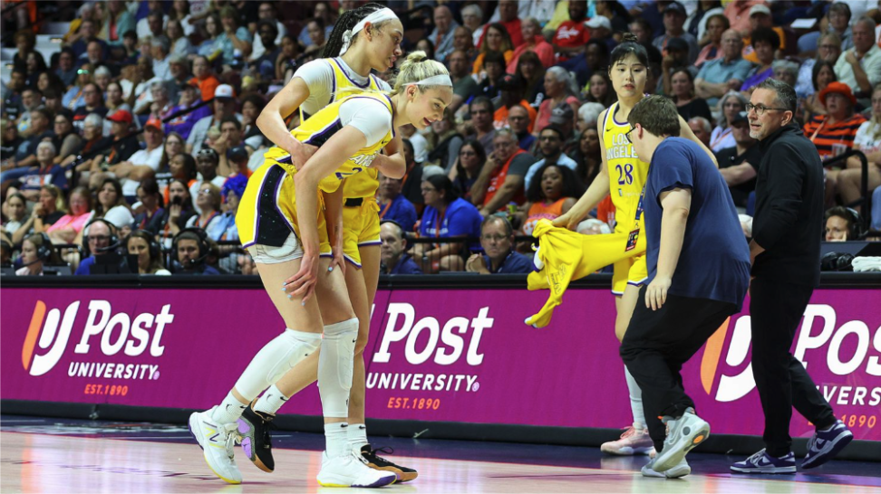
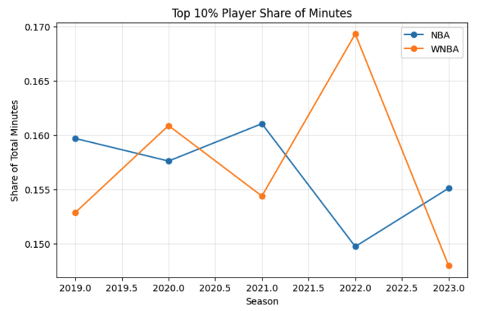
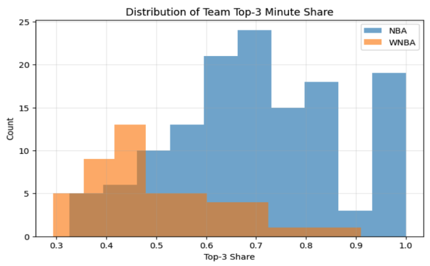
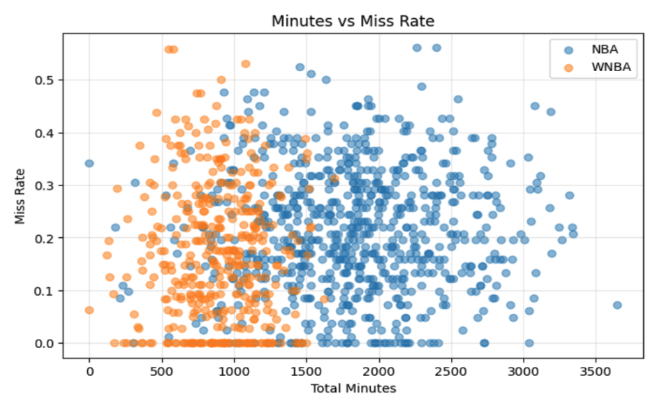

Are WNBA Injuries a Structural Problem?
By Esma Demirkan | June 11, 2026

Injuries in the WNBA have started to feel constant. Every season, there's a new list of star players missing time, teams reshuffling rotations, and conversations about the league having a “health problem.” Most of these conversations stay at the surface level, and get ruled as bad luck, or part of the game. But what if it's not as random as we think?
The WNBA is not a smaller version of the NBA, it is built differently. Rosters are smaller, rotations are much tighter, and the schedule is more condensed. On top of all that, a lot of the players are coming off overseas seasons, meaning their workload is not just limited to what we see in the summer. So instead of focusing on individual injuries, it makes more sense to ask a bigger question: does the structure of the league itself create conditions that make injuries more likely?
To see if this is true, I looked at how workload is actually distributed across the NBA and WNBA, who is playing them, and how consistently teams rely on the same players.

At a basic level, both leagues rely heavily on their star players. The top 10% of players in each league have a similar share of total minutes, so neither league is dramatically more top player heavy overall. However, that does not tell the whole story. What stands out more is how stable the workload is. The WNBA shows more year to year fluctuation, which can suggest that how the teams depend on their stars is not as consistent. The NBA, on the other hand, looks steadier on the league level.
The difference becomes even more clear when you look at teams instead of league averages. Across the WNBA, teams consistently rely on a small core of players to carry a large share of minutes. It is pretty much the norm, and it's not just a few teams doing this. In the NBA, there's more variation, some teams are very star player heavy, but others spread minutes out across deeper rotations.

As shown here, WNBA teams consistently cluster around higher levels of top-three minute share. Even if the total workload looks similar on paper, the WNBA concentrates that workload in a more uniform way. There's less flexibility in how teams distribute minutes, which means fewer built in breaks for key players.
Then there's the question that seems obvious but doesn't actually hold up. Do more minutes lead to more missed games?

When you plot total minutes against games missed, there isn't a clear relationship in either league. High minute players are not consistently missing more time, and lower minute players are not more available. The data is scattered in both directions. This shows that workload alone does not explain injuries or availability in a clean way.
In the WNBA, however, smaller rosters and tighter rotations mean teams often don’t have the option to ease workload, even if they want to. Players are expected to be consistently available because there’s less depth behind them. The lack of a developmental system, like the NBA’s G League, only reinforces that. In the NBA, deeper rosters and a longer season can create more opportunities for rest, even if players are logging more total minutes.
So the issue falls not on how much players are playing, but how replaceable they are within a system. If a team can't afford to sit a player, that changes how workload is managed, regardless of the raw numbers. That's what makes the injury conversation more complicated. It is not solely about minutes or scheduling on their own, but more about how those factors interact with roster construction and league design. The WNBA is not pushing players harder in terms of workload, but it is putting them in situations where that workload is less flexible and harder to manage over time.
So are WNBA injuries just bad luck?
No. The data suggests they’re shaped by how the league is built. It’s not just about how much players are playing, but how little flexibility teams have to manage that workload. When depth is limited and rest isn’t always an option, workload becomes harder to adjust, and that difference may matter more than the raw numbers themselves.